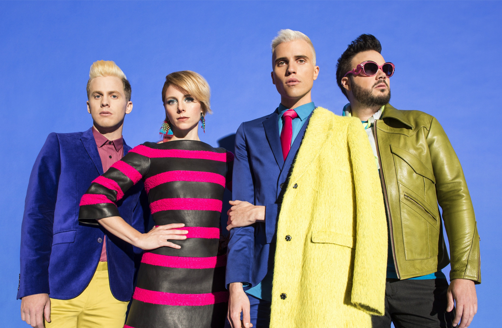
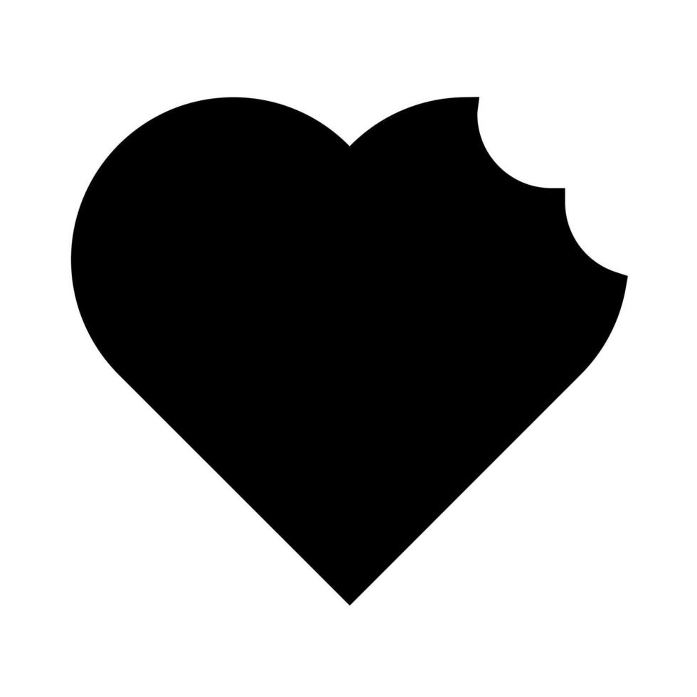

Two Artists I Like
Two songs. Two different ideas.
This website looks at how two completely different pop acts, alternative rock group Neon Trees and pop superstar Britney Spears, write about the crazy, all-consuming feeling of having a huge crush on someone. While one band uses high-energy rock guitars and the other goes for sleek dance beats, both songs show that a truly unforgettable hit needs a ton of passion and a lot of personality.
Pop music has always been a great way to talk about wild emotions, but falling head over heels for someone brings out some of the best songwriting. Whether it is loud guitars or catchy electronic beats, both of these tracks took over the radio by turning the crazy experience of a new crush into a massive song you just want to blast in the car.
Putting these two tracks next to each other shows how different styles of music can tell the exact same story. From massive radio airplay to legendary music videos, both songs are major milestones in pop music history.
Whether you like the catchy rock vibe of the 2010s or the super polished dance-pop of the early 2000s, both tracks prove that great songwriting happens when artists lean into big emotions. Comparing them shows how catchy beats, clever lyrics, and bold style come together to create timeless pop moments that people still love listening to today.

Neon Trees
Song: Animal (2010)
Formed in Utah in 2005, Neon Trees burst onto the alternative scene wearing neon skinny jeans and bringing tons of high energy style. Led by frontman Tyler Glenn and guitarist Chris Allen, the group blended indie rock clubs with massive radio hits. Their breakout track "Animal" proved that rock music could still be super catchy, fun to dance to, and completely obsessive all at the same time, making them a defining band of the 2010s rock scene.
View Neon Trees Page
Britney Spears
Song: Toxic (2004)
There is pop music before Britney Spears, and pop music after her. Bursting onto the stage in the late nineties, Britney completely changed pop culture and defined an entire era of entertainment. By the time she dropped "Toxic" in 2004, she was already unstoppable. The Grammy-winning track, with its wild mix of synths, guitars, and unique string samples, proved she was not just following trends, she was setting them for the whole music world.
View Britney Spears PageWhat Is This Website About?
Both songs explore that wild feeling of losing your mind over someone, but they use two completely different metaphors to describe it:
- "Animal" compares strong physical attraction like hunger and wild instincts, treating love like a chaotic survival situation.
- "Toxic" compares being obsessed with someone to drinking a dangerous potion, knowing full well it is bad for you but taking it anyway because the thrill is too good to put down.
Even though they sound different, both tracks capture that exact same feeling of total surrender. They show how great songwriting can take an overwhelming crush and turn it into an explosive chorus that gets stuck in your head for days.
